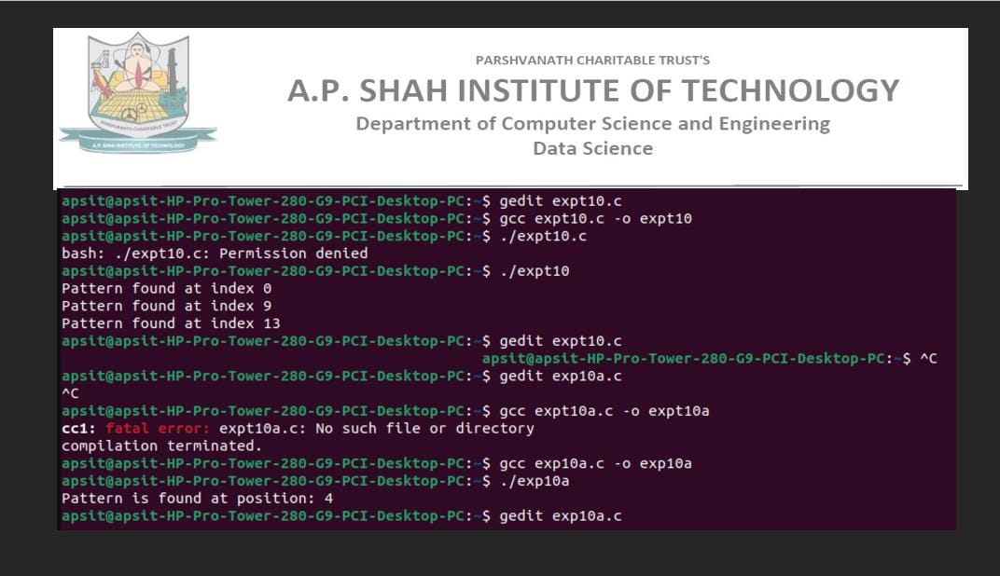

Program 1:
#include <stdio.h>
#include <string.h>
#define d 256
void rabinKarp(char pattern[], char text[], int q) {
int M = strlen(pattern);
int N = strlen(text);
int i, j;
int p = 0; // hash value for pattern
int t = 0; // hash value for text
int h = 1;
// Calculate the hash value of h
for (i = 0; i < M - 1; i++)
h = (h * d) % q;
// Calculate the hash value of pattern and first window of text
for (i = 0; i < M; i++) {
p = (d * p + pattern[i]) % q;
t = (d * t + text[i]) % q;
}
// Slide the pattern over text one by one
for (i = 0; i <= N - M; i++) {
// Check the hash values of current window of text and pattern.
// If the hash values match, then only check for characters one by one
if (p == t) {
// Check for characters one by one
for (j = 0; j < M; j++) {
if (text[i + j] != pattern[j])
break;
}
if (j == M)
printf("Pattern found at index %d\n", i);
}
// Calculate hash value for next window of text: Remove leading digit, add trailing digit
if (i < N - M) {
t = (d * (t - text[i] * h) + text[i + M]) % q;
// Make sure hash value is positive
if (t < 0)
t = (t + q);
}
}
}
int main() {
char text[] = "AABAACAADAABAABA";
char pattern[] = "AABA";
int q = 101; // A prime number
rabinKarp(pattern, text, q);
return 0;
}

1. Initialize variables:
- M = length of pattern (pat)
- N = length of text (txt)
- i = 0
2. Repeat the following steps while i <= N - M:
a. Set j = 0
b. Repeat the following steps while j < M:
i. If txt[i + j] != pat[j], break the loop
ii. Increment j by 1
c. If j equals M:
i. Print "Pattern found at index i"
d. Increment i by 1
3. End of algorithm